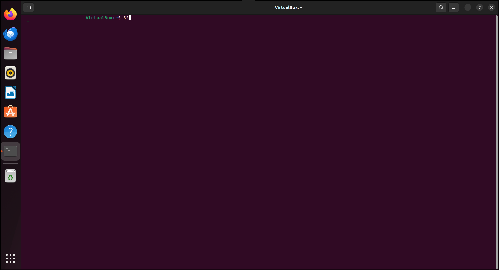

1
package sem_4_pack;
import java.util.Scanner;
public class ford {
private int D[];
private int num_ver;
public static final int MAX_VALUE = 999;
public ford(int num_ver) {
this.num_ver = num_ver;
D = new int[num_ver + 1];
}
public void BellmanFordEvaluation(int source, int A[][]) {
for (int node = 1; node <= num_ver; node++) {
D[node] = MAX_VALUE;
}
D[source] = 0;
for (int node = 1; node <= num_ver - 1; node++) {
for (int sn = 1; sn <= num_ver; sn++) {
for (int dn = 1; dn <= num_ver; dn++) {
if (A[sn][dn] != MAX_VALUE) {
if (D[dn] > D[sn] + A[sn][dn])
D[dn] = D[sn] + A[sn][dn];
}
}
}
}
for (int sn = 1; sn <= num_ver; sn++) {
for (int dn = 1; dn <= num_ver; dn++) {
if (A[sn][dn] != MAX_VALUE) {
if (D[dn] > D[sn] + A[sn][dn])
System.out.println("The Graph contains negative egde cycle");
}
}
}
for (int vertex = 1; vertex <= num_ver; vertex++) {
System.out.println("distance of source " + source + " to " + vertex + " is " + D[vertex]);
}
}
public static void main(String[] args) {
int num_ver = 0;
int source;
Scanner scanner = new Scanner(System.in);
System.out.println("Enter the number of vertices");
num_ver = scanner.nextInt();
int A[][] = new int[num_ver + 1][num_ver + 1];
System.out.println("Enter the adjacency matrix");
for (int sn = 1; sn <= num_ver; sn++) {
for (int dn = 1; dn <= num_ver; dn++) {
A[sn][dn] = scanner.nextInt();
if (sn == dn) {
A[sn][dn] = 0;
continue;
}
if (A[sn][dn] == 0) {
A[sn][dn] = MAX_VALUE;
}
}
}
System.out.println("Enter the source vertex");
source = scanner.nextInt();
ford b = new ford(num_ver);
b.BellmanFordEvaluation(source, A);
scanner.close();
}
}
----------------------------------------------------------
Enter the number of vertices
5
Enter the adjacency matrix
0 3 2 4 999
3 0 999 2 999
2 999 0 2 3
4 2 2 0 4
999 999 3 4 0
Enter the source vertex
1
distance of source 1 to 1 is 0
distance of source 1 to 2 is 3
distance of source 1 to 3 is 2
distance of source 1 to 4 is 4
distance of source 1 to 5 is 5
Enter the number of vertices
4
Enter the adjacency matrix
0 4 3 999
999 0 999 3
0 7 0 999
999 999 -15 0
Enter the source vertex
1
The Graph contains negative egde cycle
distance of source 1 to 1 is 0
distance of source 1 to 2 is -1
distance of source 1 to 3 is -13
distance of source 1 to 4 is 2
---------------------------------------------------------
2
set ns [new Simulator]
$ns color 1 Blue
$ns color 2 Red
set tracefile1 [open lab6.tr w]
set winfile [open winfile w]
$ns trace-all $tracefile1
set namfile [open lab6.nam w]
$ns namtrace-all $namfile
proc finish { } {
global ns tracefile1 namfile
$ns flush-trace
close $tracefile1
close $namfile
exec nam lab6.nam &
exit 0
}
set n0 [$ns node]
set n1 [$ns node]
set n2 [$ns node]
set n3 [$ns node]
set n4 [$ns node]
set n5 [$ns node]
$n1 shape box
$ns duplex-link $n0 $n2 2Mb 10ms DropTail
$ns duplex-link $n1 $n2 2Mb 10ms DropTail
$ns simplex-link $n2 $n3 0.3Mb 100ms DropTail
$ns simplex-link $n3 $n2 0.3Mb 100ms DropTail
set lan [$ns newLan "$n3 $n4 $n5" 0.5Mb 40ms LL Queue/DropTail MAC/802_3]
$ns duplex-link-op $n0 $n2 orient right-down
$ns duplex-link-op $n1 $n2 orient right-up
$ns simplex-link-op $n3 $n2 orient left
$ns simplex-link-op $n2 $n3 orient right
$ns queue-limit $n2 $n3 20
set tcp [new Agent/TCP]
$ns attach-agent $n0 $tcp
set sink [new Agent/TCPSink]
$ns attach-agent $n4 $sink
$ns connect $tcp $sink
$tcp set fid_ 1
$tcp set packetSize_ 552
set ftp [new Application/FTP]
$ftp attach-agent $tcp
set tcp1 [new Agent/TCP]
$ns attach-agent $n1 $tcp1
set sink1 [new Agent/TCPSink]
$ns attach-agent $n5 $sink1
$ns connect $tcp1 $sink1
$tcp1 set fid_ 2
$tcp1 set packetSize_ 552
set telnet0 [new Application/Telnet]
$telnet0 attach-agent $tcp1
set outfile1 [open congestion1.xg w]
puts $outfile1 "TitleText: Congestion Window-- Source _tcp"
puts $outfile1 "xUnitText: Simulation Time(Secs)"
puts $outfile1 "yUnitText: Congestion WindowSize"
set outfile2 [open congestion2.xg w]
puts $outfile2 "TitleText: Congestion Window-- Source _tcp1"
puts $outfile2 "xUnitText: Simulation Time(Secs)"
puts $outfile2 "yUnitText: Congestion WindowSize"
proc plotWindow {tcpSource outfile} {
global ns
set time 0.1
set now [$ns now]
set cwnd [$tcpSource set cwnd_]
puts $outfile "$now $cwnd"
$ns at [expr $now+$time] "plotWindow $tcpSource $outfile"
}
$ns at 0.1 "plotWindow $tcp $winfile"
$ns at 0.0 "plotWindow $tcp $outfile1"
$ns at 0.1 "plotWindow $tcp1 $outfile2"
$ns at 0.3 "$ftp start"
$ns at 0.5 "$telnet0 start"
$ns at 49.0 "$ftp stop"
$ns at 49.1 "$telnet0 stop"
$ns at 50.0 "finish"
$ns run
-------------------------------------------------------------------------------
gedit lab6.tcl
ns lab6.tcl
gedit lab6.tr
xgraph congestion1.xg
xgraph congestion2.xg
-------------------------------------------------------------------------------
3
package sem_4_pack;
import java.util.*;
public class Leakybucket {
public static void main(String[] args) {
int i;
int a[] = new int[20];
int rem = 0, cap = 4, rate = 3, sent, recv;
Scanner sc = new Scanner(System.in);
System.out.println("Enter the number of packets:");
int n = sc.nextInt();
System.out.println("Enter the packet sizes:");
for (i = 1; i <= n; i++)
a[i] = sc.nextInt();
System.out.println("CLOCK \t Packet Size \t\t Accept \t Sent \t Remaining");
for (i = 1; i <= n; i++) {
if (a[i] != 0) {
if (rem + a[i] > cap)
recv = -1;
else {
recv = a[i];
rem += a[i];
}
} else
recv = 0;
if (rem != 0) {
if (rem < rate) {
sent = rem;
rem = 0;
} else {
sent = rate;
rem = rem - rate;
}
} else
sent = 0;
if (recv == -1)
System.out.println(i + "\t\t" + a[i] + "\t\tDropped\t\t" + sent + "\t\t" + rem);
else
System.out.println(i + "\t\t" + a[i] + "\t\t"+recv+ "\t\t" + sent + "\t\t" + rem);
}
}
}
-------------------------------------------------------------------------------
Enter the number of packets:
3
Enter the packet sizes:
4
3
2
CLOCK Packet Size Accept Sent Remaining
1 4 4 3 1
2 3 3 3 1
3 2 2 3 0
Enter the number of packets:
4
Enter the packet sizes:
4
3
2
5
CLOCK Packet Size Accept Sent Remaining
1 4 4 3 1
2 3 3 3 1
3 2 2 3 0
4 5 Dropped 0 0
-------------------------------------------------------------------------------
4